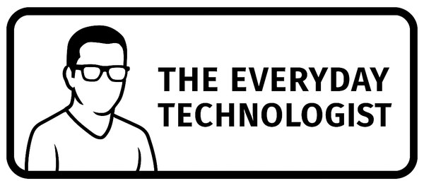

Strategic technology guidance, in plain language, for leaders and organisations who already know they need it.

The Everyday Technologist exists to take the fear and mystery out of technology, for people and for business. The same plain-language, people-first approach that guides everyday people with their devices, applied at the strategic level for the organisations that depend on technology to function and grow.
If your IT partner handles the technical and operational work, I handle the strategy, communication, and business alignment. We dovetail.
Each of these is a distinct engagement. Most clients start with one and expand from there. If you are not sure which applies to your situation, that is what the first conversation is for.
Understanding how your business actually works before recommending anything. I map your processes, surface the gaps, and translate operational reality into clear technology requirements, so nothing gets built for the wrong problem.
Helping leaders understand what a technology decision actually means, in plain language, with real business context. Vendor pitch, board paper, or a question from your team: jargon becomes clarity.
Keeping technology projects on the rails from the business side. Oversight that keeps stakeholders informed, timelines honest, and delivery teams focused on outcomes rather than outputs. Governance without the bureaucracy.
Helping your organisation decide where technology fits, not just what to buy or build. A coherent direction aligned with your actual goals, culture, and capacity to change.
Practical workshops and briefings that build real confidence with technology. For leaders who make decisions and staff who work with new tools every day. Based on the same approach as the Everyday Tech for People programme.
Helping your organisation understand what AI can realistically do for your business, where to start, what to avoid, and how to bring your people along rather than leaving them behind.
Building a culture of sensible security, without the fear-mongering. Practical guidance on what your business actually needs to do to protect itself and the people it serves.
Technology change is people change. I help organisations prepare their teams, manage the transition, and build the kind of buy-in that makes new technology stick rather than stall.
Business leaderswho want honest technology advice without being sold something
Organisations mid-transformationwho have lost the thread between IT delivery and business intent
Boards and executiveswho need a trusted, independent perspective on technology decisions
Technical IT firmswhose clients need strategic and management support beyond the operational work
Small to mid-size businessesin Tasmania and beyond who want senior-level thinking without the corporate overhead
Organisations evaluating vendorswho want someone in the room on their side, not the vendor's
Referred by a technical IT partner? Many clients come through IT firms whose work is more operational and technical. I handle the strategy, communication, and business management layer alongside that work. If your partner referred you here, that is exactly how this is designed to work. Happy to have an initial conversation with no strings attached.
No jargon. No pitch. A straight conversation about whether I can help, and if I am not the right fit, I will tell you who is.